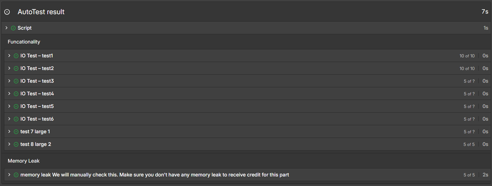
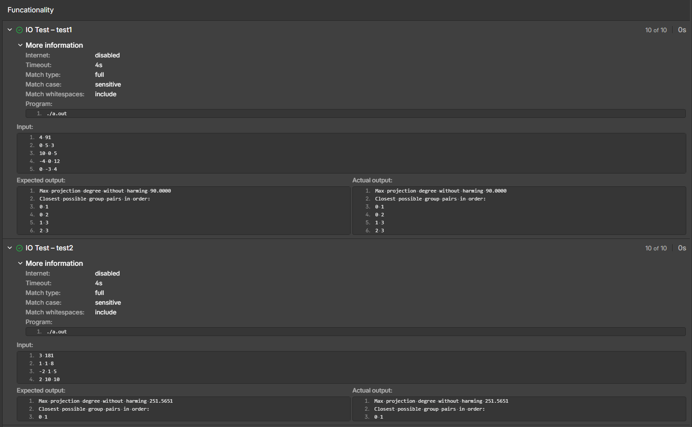

I did this project a few years ago as a school assignment, and I do not have the original project description, so I will just give a general overview of the project and my experience with it. The main goal of this project was to implement a merge sort algorithm in C, and use it to sort data, mainly focusing on runtimes. The data we were sorting was a list of high precision angles.


This project was mainly a learning experience in using a merge sort algorithm with an acceptable Big O runtime, and handling high precision data. It also built off of some of the concepts I learned in my previous C projects, mainly dynamic memory allocation and pointers. A big challenge of this project was making merge sort run in the alloted Big O runtime. Additionally, it was my first time really working with sorting algorithms, and I had to do a lot of research to understand how merge sort worked and how to implement it in C.